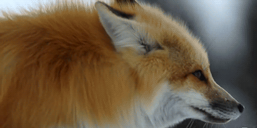

De que trata la pagina?
Es una pagina dedicada al zorro, ademas de sus origenes y clases

Que es un zorro?
Un zorro es un mamífero perteneciente a la familia Canidae y al género Vulpes. Son conocidos por sus características físicas distintivas, como sus hocicos puntiagudos, orejas erectas y colas largas y peludas. Los zorros son animales inteligentes y ágiles que se encuentran en diversas regiones del mundo, desde bosques hasta desiertos. Son carnívoros y su dieta varía según la especie y el hábitat, pero generalmente incluye pequeños mamíferos, aves, insectos, frutas y vegetales. Además, los zorros son conocidos por su astucia y su capacidad para adaptarse a diferentes entornos.
